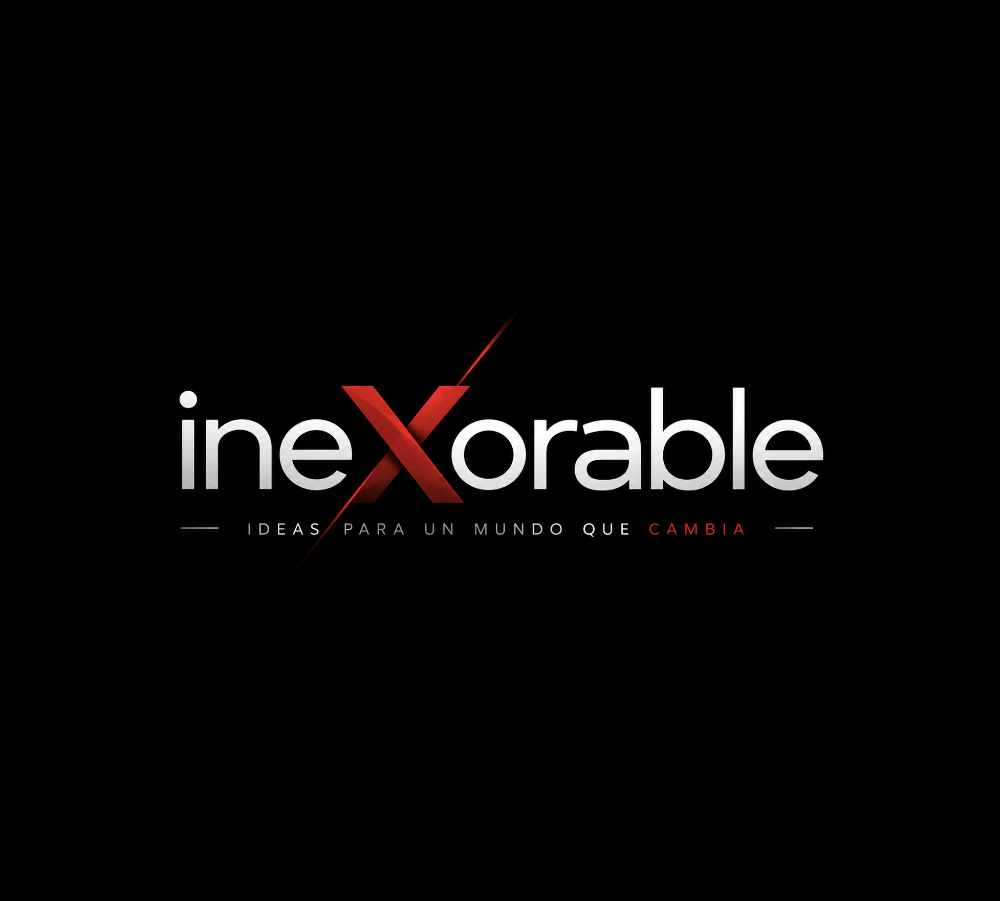
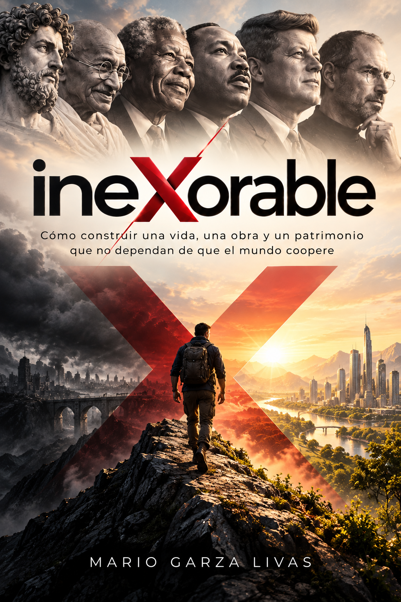
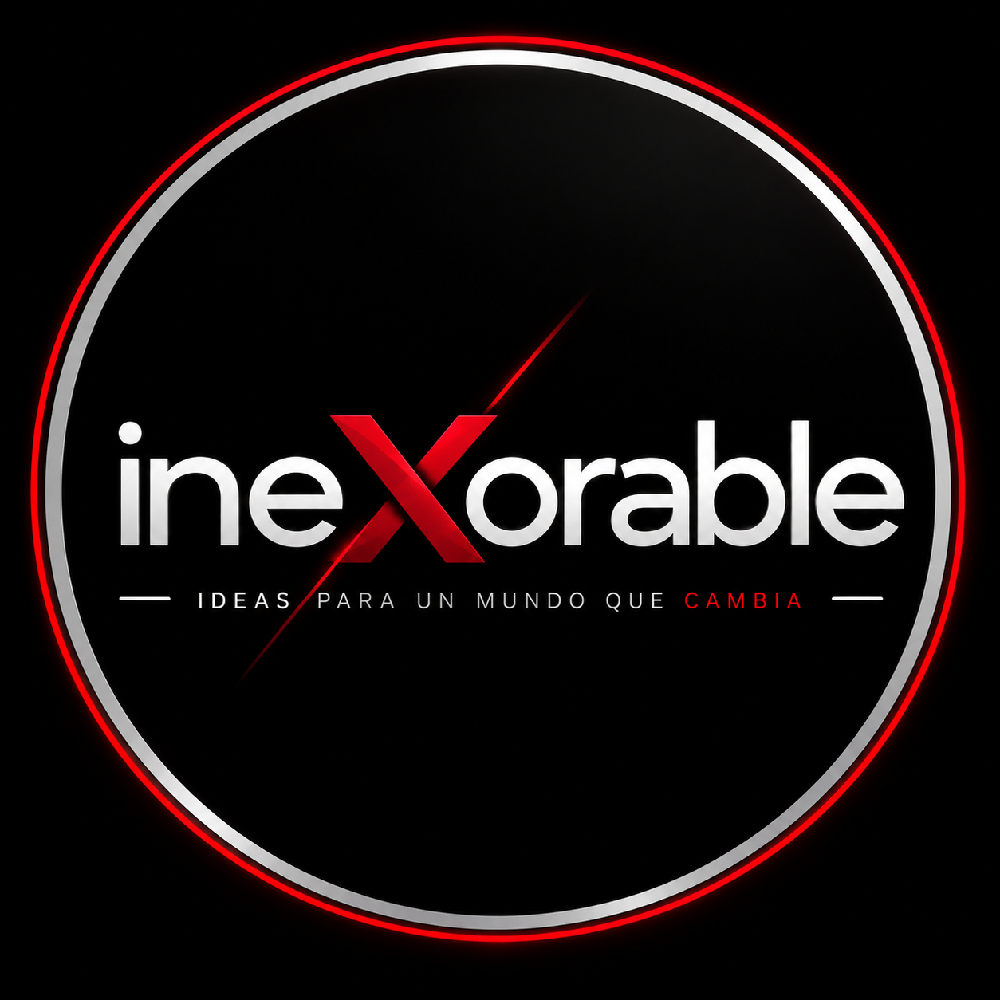

ineXorable es un sistema de pensamiento sobre cómo construir una vida, una obra y un patrimonio que no dependan de que el mundo coopere. No propone predecir mejor el futuro. Propone depender menos de acertarlo.
Qué es ineXorable, desde dónde mira y por qué el tema puede cambiar sin que cambie el proyecto.
ineXorable nació de una observación incómoda: cuando las condiciones cambian, la diferencia entre quienes siguen avanzando y quienes quedan atrapados casi nunca se explica por haber reaccionado mejor a la crisis. Se explica por cómo estaban construidos antes de que la crisis apareciera. Personas competentes, disciplinadas, informadas y bien asesoradas responden de maneras radicalmente distintas a un mismo cambio. La explicación no está en el temperamento ni en la suerte, sino en una arquitectura previa que la perturbación se limita a hacer visible.
De ahí el desplazamiento que organiza todo el proyecto: de la predicción a la arquitectura. En lugar de gastar el esfuerzo principal en anticipar qué sucederá, ineXorable identifica aquello de lo que dependemos para que lo construido siga funcionando, y trabaja sobre eso. Una preparación específica exige acertar el escenario. Una capacidad genérica sigue sirviendo aunque el escenario previsto nunca ocurra.
Por eso ineXorable no se define por un tema. Se define por una forma de mirar. Puede ocuparse de inteligencia artificial, de patrimonio, de alto rendimiento, de liderazgo o de geopolítica, porque frente a cualquiera de ellos hace siempre las mismas preguntas. El tema cambia; el lente permanece.
Ese recorrido tiene un destino: la agencia. No el control —el mercado, la tecnología, los ciclos y las decisiones de terceros seguirán fuera de nuestro alcance—, sino la capacidad preservada de elegir cómo responder. Sin margen no hay alternativas; sin alternativas no hay elección; sin elección, la agencia es solo una aspiración.
Ese pensamiento se expresa a través de tres instrumentos. El libro desarrolla la arquitectura completa. El podcast explora preguntas abiertas y las pone a prueba contra la realidad. La conferencia transforma la perspectiva de una audiencia en vivo. Una idea puede nacer en el escenario, investigarse en el podcast y terminar desarrollada en el libro. No son tres marcas con el mismo nombre: son tres instrumentos de un mismo sistema.
Transformaciones estructurales, incertidumbre, disrupción, obsolescencia y nuevas condiciones.
IA, IA agéntica, automatización, herramientas, conocimiento, decisiones y transformación del trabajo.
Identidad, aprendizaje, carácter, disciplina, criterio, adaptación y evolución.
Alto rendimiento, productividad, energía, atención, presión, recuperación y capacidad sostenible.
Estrategia, organizaciones, liderazgo, innovación, transformación, modelos y sistemas.
Capital, activos, propiedad, preservación, independencia y construcción intergeneracional.
Principios, valores, identidad, propósito, prioridades y aquello que vale la pena preservar.
Influencia, iniciativa, innovación, construcción y el paso de reaccionar a actuar.
La obra fundacional: donde la arquitectura se desarrolla completa. Descarga directa en PDF, sin costo.

Cómo construir una vida, una obra y un patrimonio que no dependan de que el mundo coopere.
La mayoría de los sistemas personales, empresariales y patrimoniales se construyen para funcionar bajo las condiciones que existen mientras se construyen. El problema aparece cuando se confunde funcionamiento actual con solidez estructural. Una empresa puede ser rentable y depender de un solo cliente. Un fundador puede ser extraordinariamente competente y concentrar en sí mismo decisiones, relaciones y conocimiento crítico. Una persona puede tener una identidad aparentemente sólida y descubrir que estaba construida alrededor de un cargo. La fragilidad permanece silenciosa mientras aquello de lo que depende sigue funcionando.
El libro trata persona, obra y patrimonio como un solo sistema de tres niveles —SER, HACER y TENER— porque muchos problemas aparecen en las junturas: un problema financiero puede ser en realidad identitario, y un problema empresarial puede estar provocado por una dependencia personal. Optimizar cada nivel por separado puede producir un sistema globalmente peor.
Y no termina en una tesis. El anexo convierte el marco en un mecanismo recurrente de diagnóstico: ocho tests, la matriz de nueve celdas, una secuencia de construcción, un ritual de revisión, cuarenta y seis preguntas, un glosario y una guía de aplicación.
| SER · Persona | HACER · Obra | TENER · Patrimonio | |
|---|---|---|---|
| Estructura | Identidad anclada | Arquitectura real | Sistema patrimonial |
| Propósito | Dirección | Razón de la obra | Función del patrimonio |
| Adaptación | Metanoia | Inteligencia adaptativa | Antifragilidad |
La estructura estabiliza. El propósito dirige. La adaptación sostiene. Cruzadas con los tres niveles, estas tres dimensiones producen una matriz que no clasifica: detecta incoherencias que un análisis por áreas no alcanza a ver.
Donde el pensamiento se explora en voz alta: investigación, preguntas abiertas y conversaciones necesarias.

El podcast no parte de un tema: parte de una pregunta que vale la pena pensar. La mayoría de los episodios son en solitario —Mario investiga, narra, conecta y desarrolla una idea hasta sus consecuencias—. Una proporción menor incorpora invitados, seleccionados no por notoriedad sino por lo que permiten pensar. Mario es la constante; los invitados son las variables.
Se estructura en temporadas conceptuales, no en calendario. Cada temporada reúne preguntas alrededor de una misma tensión y funciona como una unidad de exploración, con pausas deliberadas entre una y otra. No publicar para llenar un calendario es un principio editorial, no una excusa.
Cada episodio debe dejar algo que sobreviva al episodio: una manera distinta de mirar algo que ya conocías, una pregunta que antes no tenías y una posibilidad de acción que no estabas viendo.
Suscribirse en YouTubeineXorable no existe para decirte qué pensar. Existe para ayudarte a pensar mejor cuando lo que creías ya no funciona.
La expresión en vivo: donde el pensamiento se condensa para producir un cambio de perspectiva en la sala.
Una conferencia ineXorable no entrega información ni entusiasmo. Entrega una experiencia intelectual diseñada para que la audiencia vea de otra manera algo que creía conocer. La medida no es el aplauso ni cuánto contenido se recuerda: es si algo cambió en la forma de interpretar la realidad y, a partir de ahí, aumentó la capacidad de decidir y actuar.
La audiencia no se define por industria ni por puesto, sino por su relación con lo que está construyendo: líderes, empresarios, ejecutivos, equipos y organizaciones que atraviesan una transformación y tienen responsabilidad sobre recursos, decisiones u otras personas.
Idealmente, cada pieza deja tres cosas: una idea que recuerdes, una pregunta que permanezca y una posibilidad de acción que antes no veías. Una misma idea puede existir en distintas duraciones, pero no se recorta ni se alarga: cada formato tiene su propia arquitectura.
Una idea, una tensión, un giro y una apertura. Para foros, universidades y eventos con varios ponentes.
Formato base y versátil. Permite construir una tesis completa sin convertirse en una clase.
El formato insignia. Desarrolla una experiencia intelectual completa, de la ruptura inicial hasta la agencia.
Sesión extendida con interacción, casos, ejercicios y aplicación de los frameworks del libro.
El podcast puede partir de un tema. La conferencia debe encontrar una tensión.
Disponible en español y en inglés, presencial y en línea.
ineXorable tiene una obra hermana. Misma arquitectura, misma tríada, una orientación distinta.
ineXorable trabaja sobre la capacidad: cómo construir margen, reducir dependencias y conservar la posibilidad de elegir cuando las condiciones dejan de cooperar. Pero hay una pregunta que ese marco, por sí solo, no puede responder: construir esa capacidad, ¿para qué y para quién?
Esa es la pregunta de Hágase Tu Voluntad: el mismo sistema —libro, podcast y conferencias— ordenado desde la fe católica. Donde ineXorable dice no dependas de acertar el futuro, la obra hermana añade ordenar antes de optimizar: antes de hacer algo mejor, más rápido o más grande, preguntar si corresponde hacerlo.
Cómo ordenar una sola vida: la persona, la vocación, las obras y aquello que se nos ha confiado. Libro, podcast y conferencias.
El resto del ecosistema.